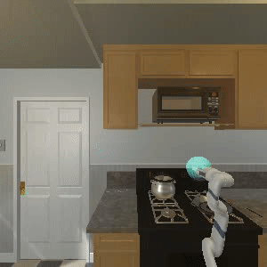
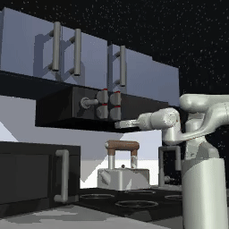
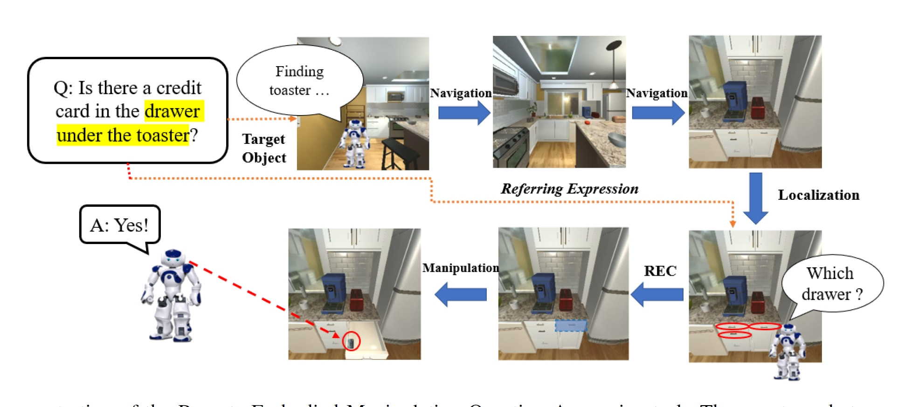

Qie Sima
30 Shuangqing Rd, Beijing, CHINA 100084
About Me
Welcome! I am currently a Ph.D. student at the Academy of Interdisciplinary Studies (AIS), Hong Kong University of Science and Technology (HKUST). Prior to my doctoral study, I received my M.Sc. degree from the Department of Computer Science and Technology, Tsinghua University, fortunately supervised by Prof. Huaping Liu, and my B.Eng. degree from Tsien’s Excellence Education Program, Tsinghua University.
My research interest mainly focuses on Embodied Intelligence, Robotic Manipulation and Multimodal learning. My previous work involves the navigation and mobile manipulation in embodied scenarios (AI2-THOR, Habitat et al.). Currently, I am working on leveraging large pre-trained models in embodied intelligence. My ultimate goal is to discover generalizable representations for a wide range of robot skills.
I am currently seeking industry or postdoctoral positions in model pretraining and data optimization for embodied intelligence. If you have positions in related areas, please feel free to contact me.
News
- [05/2026] Attended the ICRA 2026 with 1 presented poster!
- [10/2023] Attended the IROS 2023 with 2 presented posters in Detroit!
- [08/2023] Working as a research engineer in Lenovo Research.
- [07/2023] Graduated from Tsinghua University with M.Sc. degree in Computer Science.
- [06/2023] Two papers are accepted by IROS 2023.
- [05/2023] Attended the ICRA 2023 with 1 presented poster in London!
Education
- Sep 2024 - Present Ph.D. Student, Academy of Interdisciplinary Studies (AIS), Hong Kong University of Science and Technology (HKUST).
- Aug 2020 - Jun 2023 Master Student, Department of Computer Science and Technology, Tsinghua University. Advisor: Prof. Huaping Liu
- Sep 2019 - Feb 2020 Visiting Student, Department of Mechanical Engineering, Georgia Institute of Technology. Advisor: Prof. Ye Zhao
- Aug 2016 - Jun 2020 Bachelor Student, School of Aerospace Engineering, Tsinghua University. TEEP (Tsien’s Excellence Education Program).
Research Interests
- Embodied Intelligence: visual language navigation, mobile manipulation, scene understanding
- Multimodal Foundation Models for Robotics: training for target robot tasks with automated data annotation and data ratio optimization (DRO)
- Lifelong Learning: lifelong learning for robotics, knowledge base for lifelong learning
- Pretrained Models for Robotics: visual language foundation models for robotics, imitation learning for downstream tasks
Publications and Projects
-

ICRA2023 IEEE International Conference on Robotics and Automation (ICRA) , May. 2023. London, UK -

IROS2023 IEEE/RSJ International Conference on Intelligent Robots and Systems (IROS) , Oct. 2023. Detroit, USA -
 IROS
2023 IEEE/RSJ International Conference on Intelligent Robots and Systems (IROS) , Oct. 2023. Detroit, USA
IROS
2023 IEEE/RSJ International Conference on Intelligent Robots and Systems (IROS) , Oct. 2023. Detroit, USA
Talks
-

ICRAthe International Conference of Robotics and Automation (ICRA), 2023, London.
Services
- Conference Reviewer: ICRA 2023, 2024, 2025; IROS 2023, 2025; CoRL 2025; HRI 2023
- Membership: IEEE RAS, IEEE CIS student member
- Journal Reviewer: IEEE RA-L
- Teaching Assistant: Introduction to Intelligent Robotics Fall 2022, instructed by Prof. Huaping Liu
Resources